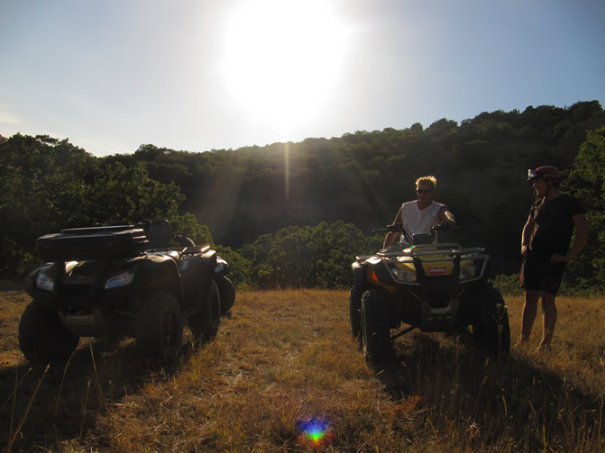
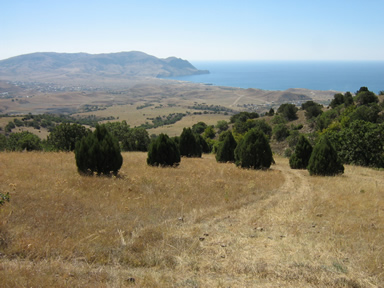
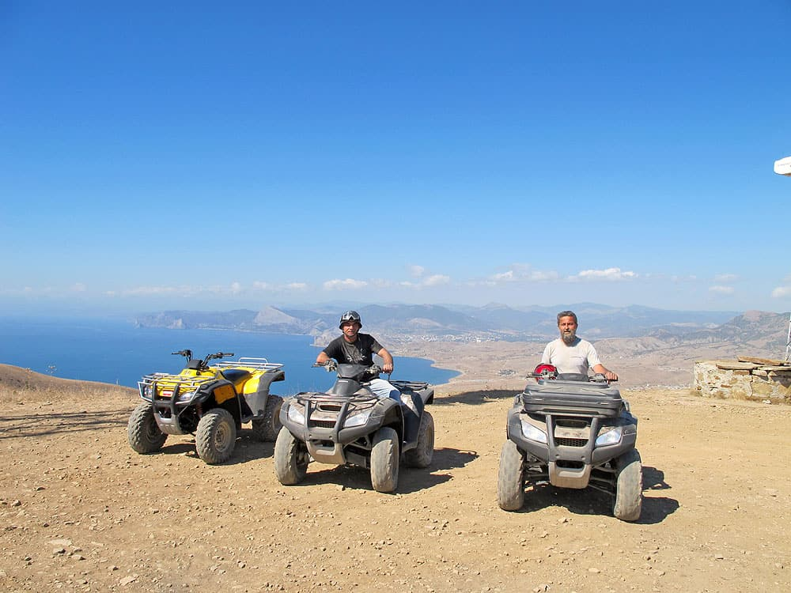
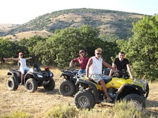
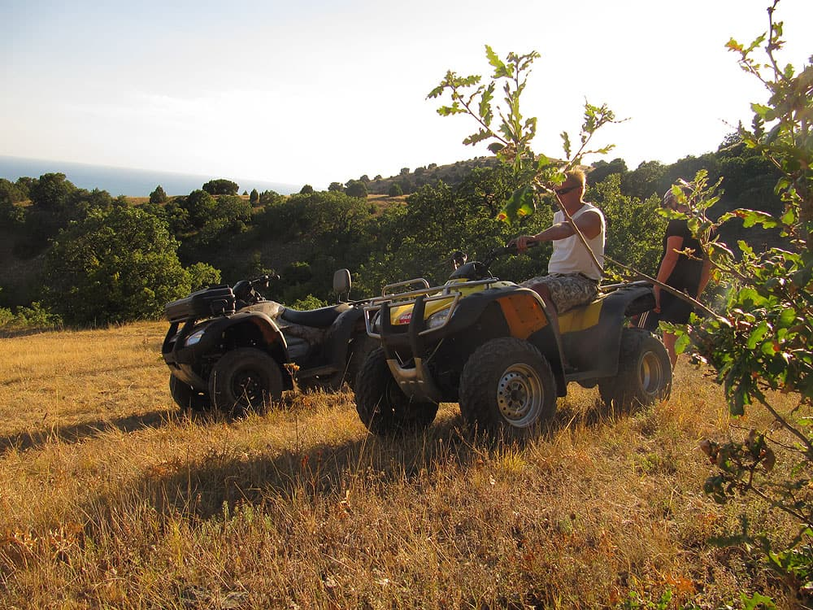
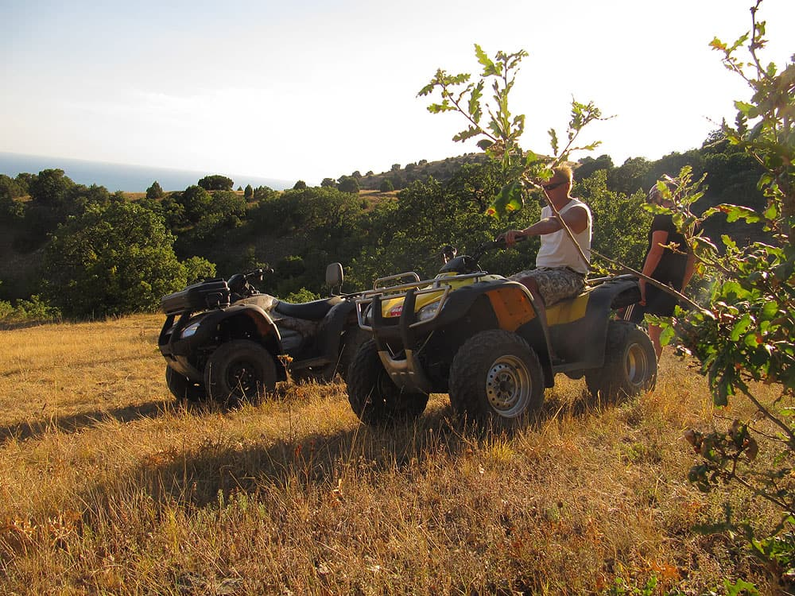
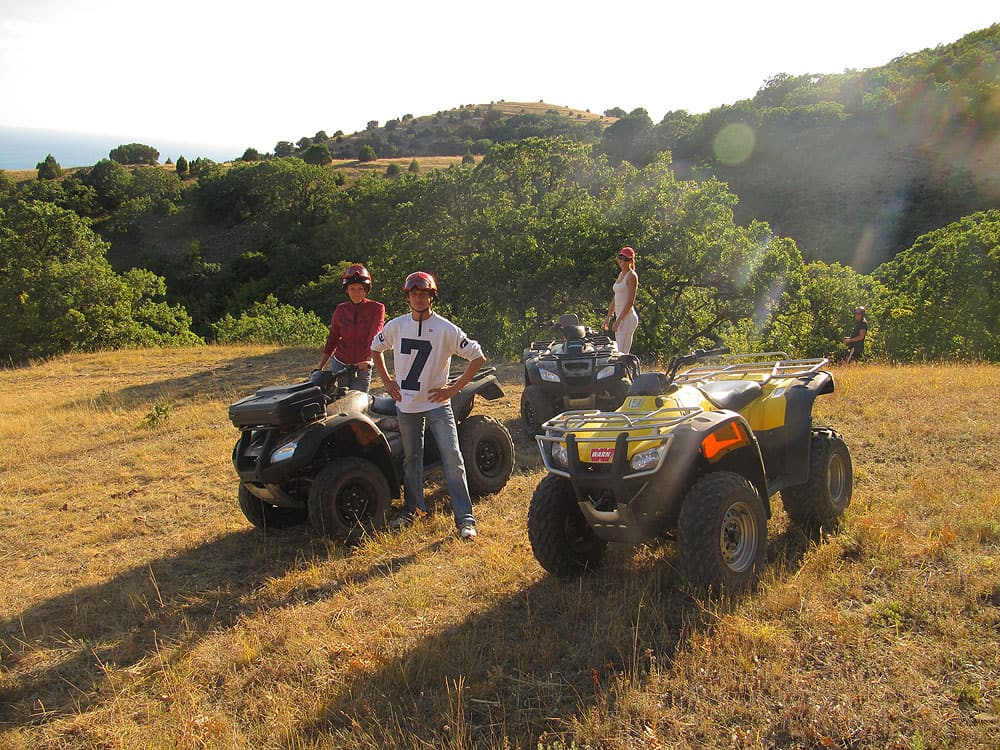
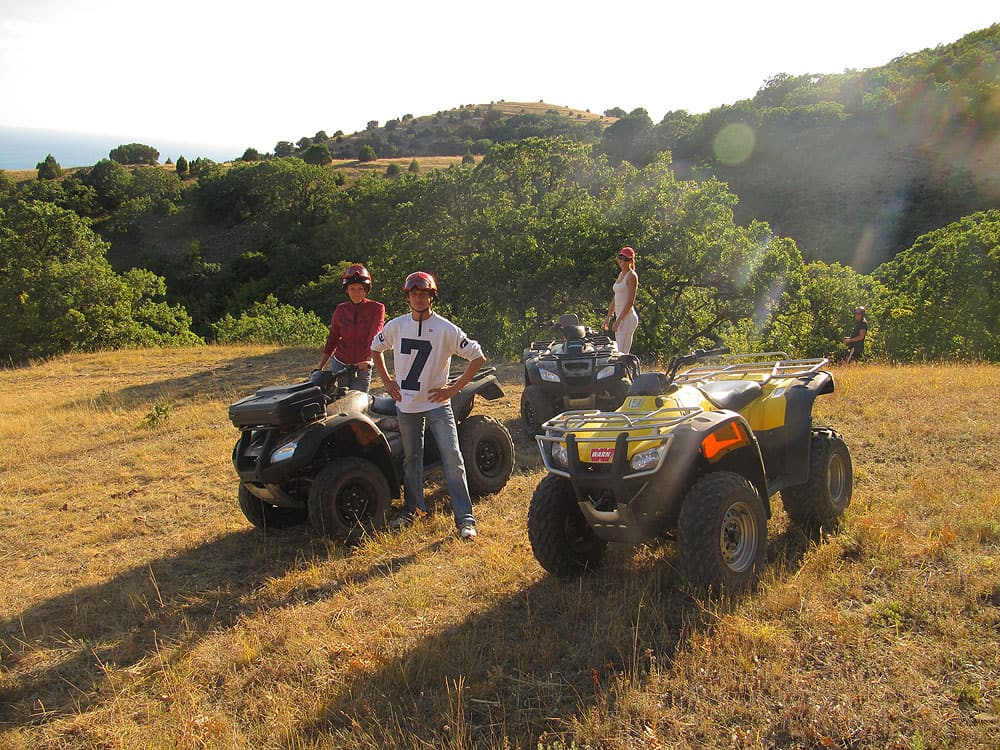

Маршрут № 1
Маршрут № 2
Маршрут № 3
Маршрут № 4

Прогулка на мыс Меганом
продолжительность
поездки 2 часа
Маршрут № 2
Поездка на гору Ай Георгий
путешествие
длится 3 часа
Маршрут № 3
Поездка на мыс Толстый
прокат квадроцикла
на 2 часа
Маршрут № 4
Лавандовое поле
аренда квадроцикла
на 1 час
Гора Манджил (Ай-Георгий), возвышающаяся над Судакской долиной с восточной стороны, самая высокая точка хребта Токлук (500 м над уровнем моря). Вторым своим названием — Ай-Георгий — гора обязана монастырю святого Георгия, который располагался у ее подножия в средние века.

Ай-Георгий отлично просматривается из любой точки города Судак. Безлесая обрывистая вершина, увенчанная практически незаметным снизу триангуляционным знаком, левее ее — обрывы тысячелетних скал и густые непроходимые леса, правее, на южных отрогах — почти безжизненные сыпучие балки и овраги.
 
Источник св. Георгия. Находится на г. Ай-Георгий (498 м), в 2 км к востоку от Судака, на север от горы Алчак-Кая. На западном склоне горы находился монастырь св. Георгия. Источник очень обилен, не пересыхает даже в самое жаркое лето, когда-то воды с Ай- Георгия снабжали всю Судакскую долину. Остатки керамических труб разных времен до сих пор встречаются на горе Ай-Георгий.
Источник находится почти на вершине горы Манджил, под скальным участком в месте образования оврага. Подняться к нему достаточно просто. От перевала между г. Манджил и безымянной террасированной вершины идет нахоженная тропа на вершину Манджил. Поднимаемся по ней, выбирая все ее левые ответвления. Переходим исток оврага и оказываемся на густо заросшем дубом участке, прямо под скальными сбросами вершины. Здесь и находится этот замечательный источник. Вода в источнике прохладная и на вкус сладковата, можно пить сырой. Посетители родника, в основном православные паломники и местные жители.
  
  
